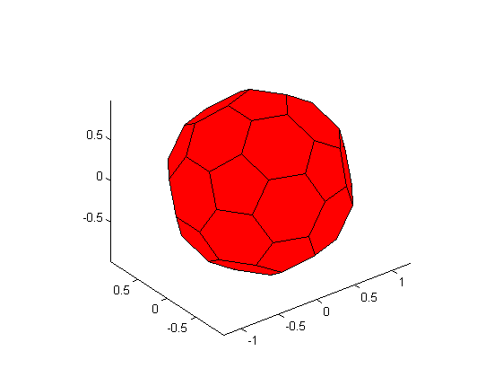
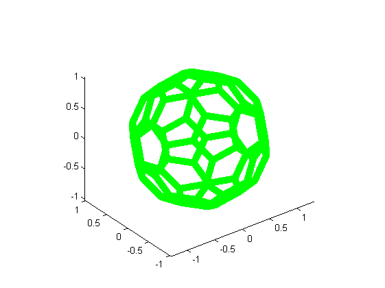
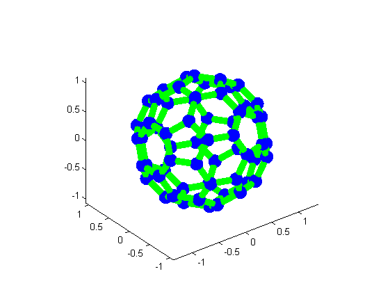
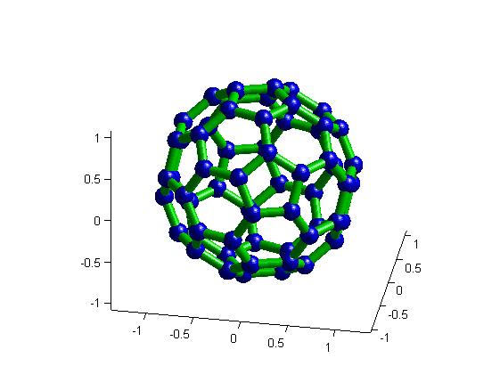

Contents
function demoDrawTubularMesh(varargin)
Initialisation
[vertices edges faces] = createSoccerBall;
figure(1); clf; hold on;
axis equal;
view(3);
drawPolyhedron(vertices, faces);

Draw each edge as a green cylinder
figure; hold on;
axis equal;
view(3);
width = .05;
radius = .1;
for i = 1:size(edges, 1)
p1 = vertices(edges(i, 1), :);
p2 = vertices(edges(i, 2), :);
drawCylinder([p1 p2 width], 'FaceColor', 'g');
end

Draw each vertex as a blue ball
for i = 1:size(vertices, 1)
drawSphere([vertices(i, :) radius], 'FaceColor', 'b');
end

More setup on display
set(gcf, 'renderer', 'opengl')
light;
view([10 30]);
